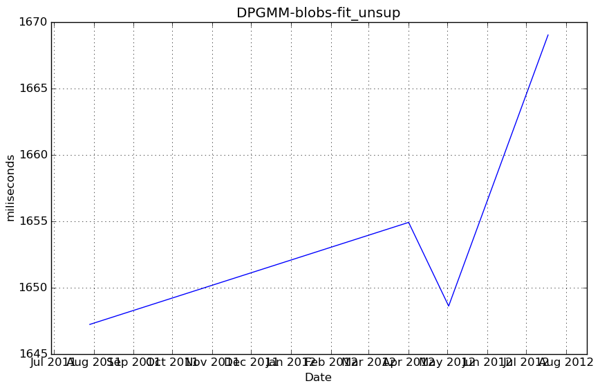
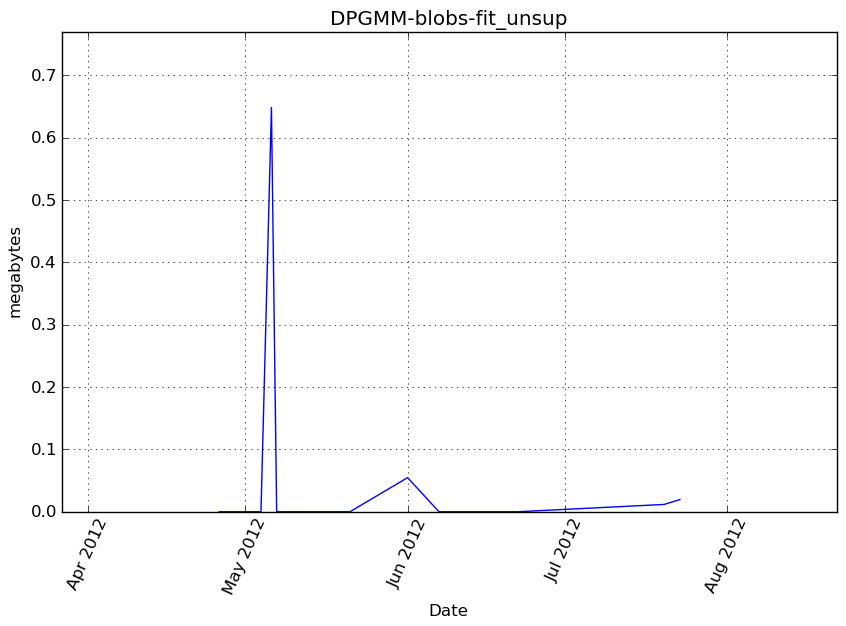
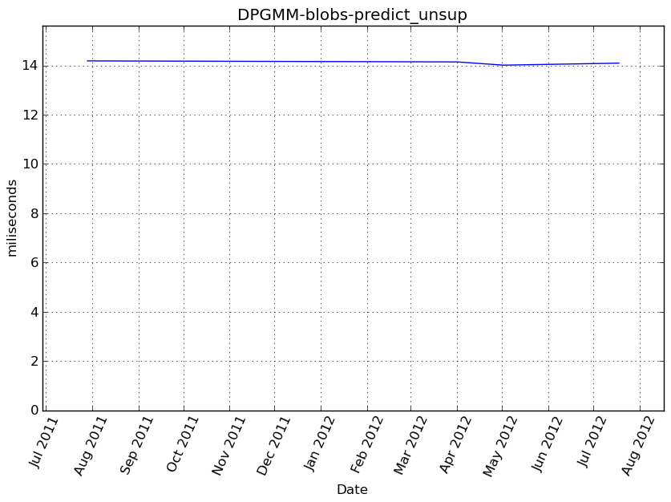
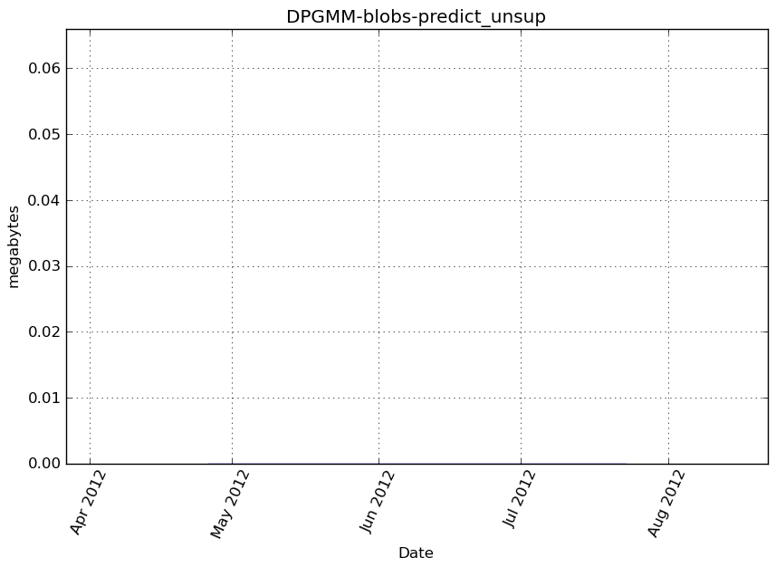
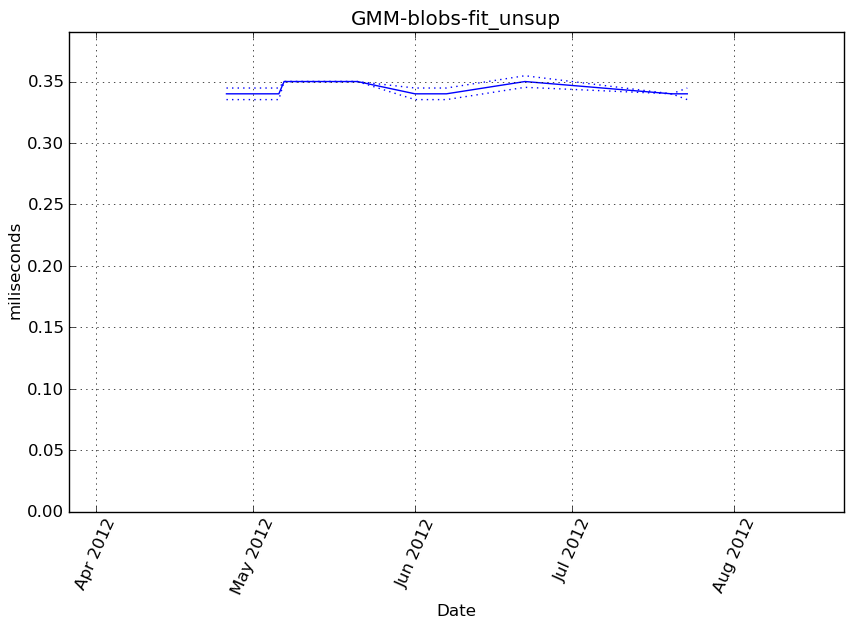
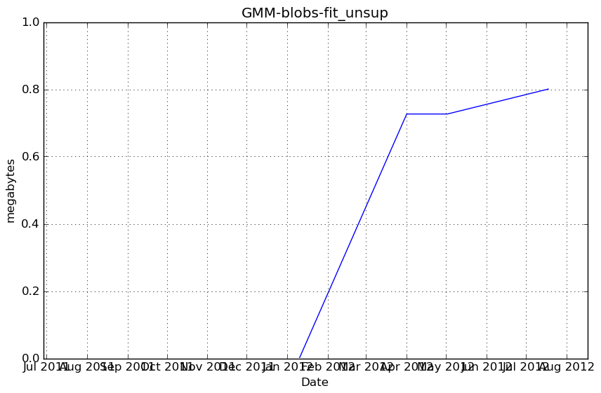
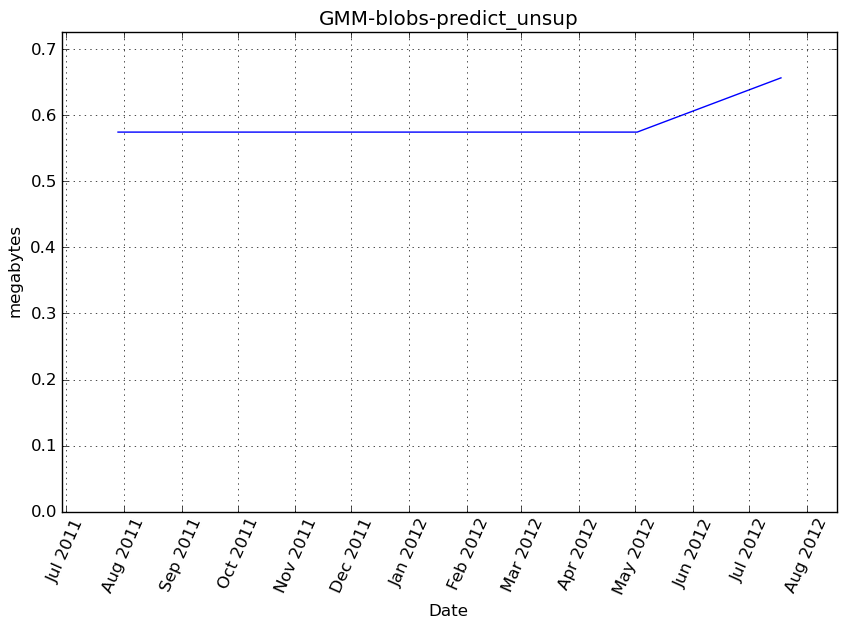
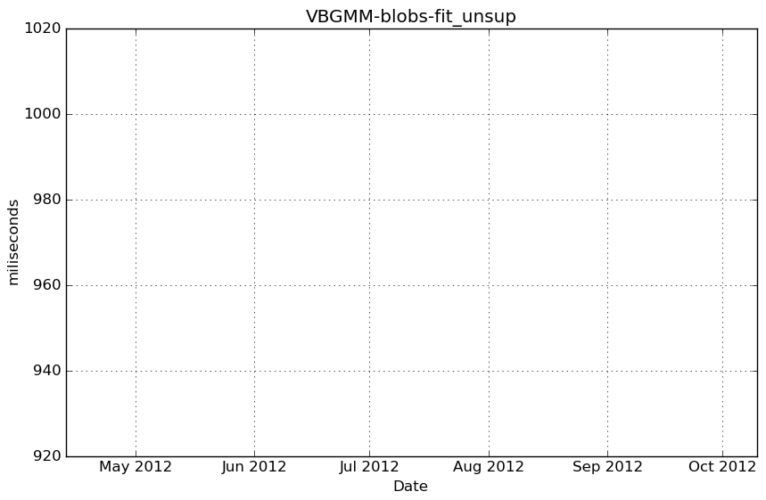
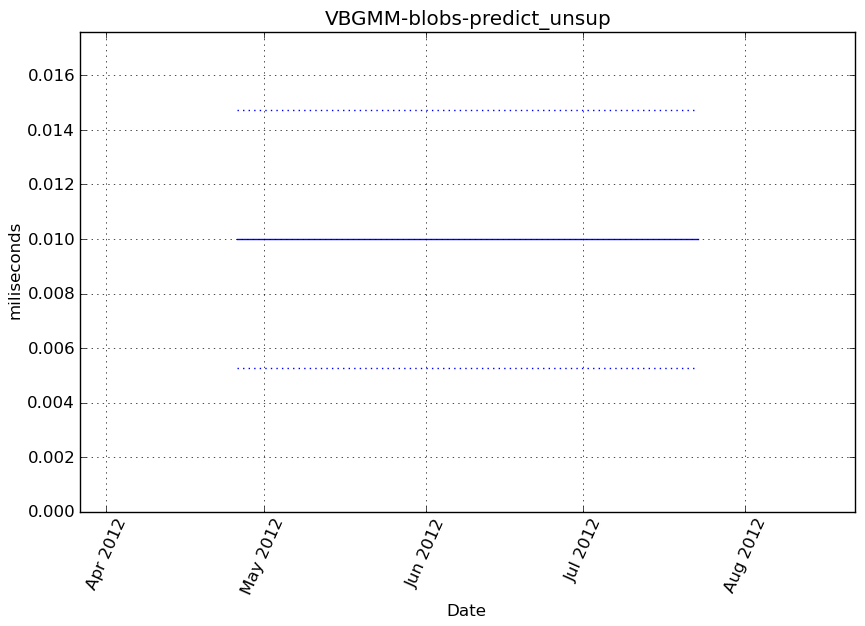
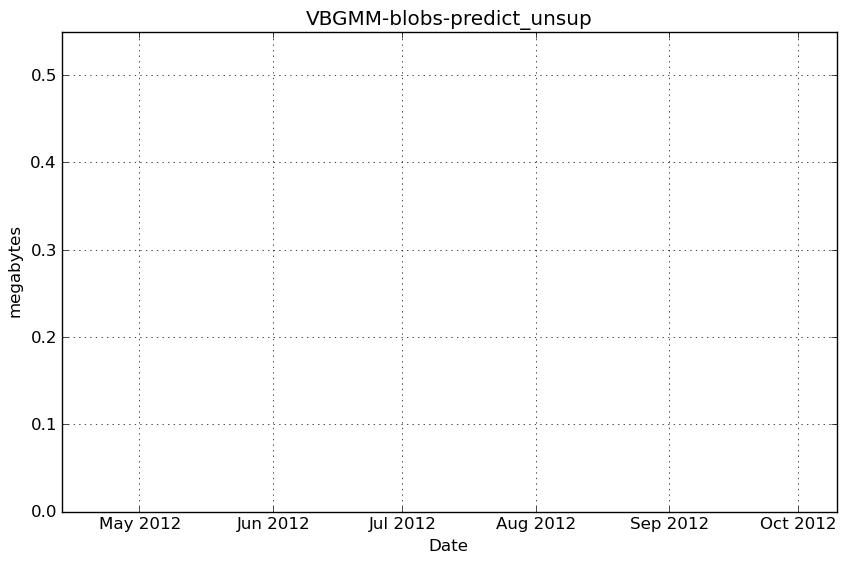

Benchmarks for mixture¶
DPGMM-blobs-fit_unsup¶
Benchmark setup
from sklearn.mixture import DPGMM
from deps import load_data
kwargs = {'n_components': 10, 'covariance_type': 'full'}
X, y, X_t, y_t = load_data('blobs')
obj = DPGMM(**kwargs)
Benchmark statement
obj.fit(X)
Execution time
Memory usage
Profile output
cProfile
37539 function calls in 1.745 seconds
Ordered by: cumulative time
ncalls tottime percall cumtime percall filename:lineno(function)
1 0.000 0.000 1.745 1.745 /hardmnt/goblin1/home/nivlad/balls/vbench/vbench/benchmark.py:257(f)
1 0.000 0.000 1.745 1.745 <f>:1(<module>)
1 0.001 0.001 1.745 1.745 /tmp/vb_sklearn/sklearn/mixture/dpgmm.py:472(fit)
10 0.000 0.000 1.310 0.131 /tmp/vb_sklearn/sklearn/mixture/dpgmm.py:372(_do_mstep)
200 0.828 0.004 0.892 0.004 /home/nivlad/.local/lib/python2.7/site-packages/scipy/linalg/basic.py:365(lstsq)
10 0.036 0.004 0.811 0.081 /tmp/vb_sklearn/sklearn/mixture/dpgmm.py:303(_update_precisions)
10 0.019 0.002 0.498 0.050 /tmp/vb_sklearn/sklearn/mixture/dpgmm.py:284(_update_means)
100 0.002 0.000 0.442 0.004 /home/nivlad/.local/lib/python2.7/site-packages/scipy/linalg/basic.py:457(pinv)
320 0.302 0.001 0.302 0.001 {numpy.core.multiarray.dot}
10 0.002 0.000 0.212 0.021 /tmp/vb_sklearn/sklearn/mixture/dpgmm.py:224(eval)
10 0.004 0.000 0.186 0.019 /tmp/vb_sklearn/sklearn/mixture/dpgmm.py:92(_bound_state_log_lik)
100 0.002 0.000 0.182 0.002 /tmp/vb_sklearn/sklearn/mixture/dpgmm.py:86(_sym_quad_form)
100 0.006 0.000 0.179 0.002 /home/nivlad/.local/lib/python2.7/site-packages/scipy/spatial/distance.py:1693(cdist)
1 0.000 0.000 0.160 0.160 /tmp/vb_sklearn/sklearn/cluster/k_means_.py:738(fit)
1 0.000 0.000 0.160 0.160 /tmp/vb_sklearn/sklearn/cluster/k_means_.py:151(k_means)
10 0.001 0.000 0.159 0.016 /tmp/vb_sklearn/sklearn/cluster/k_means_.py:303(_kmeans_single)
100 0.157 0.002 0.157 0.002 {scipy.spatial._distance_wrap.cdist_mahalanobis_wrap}
10 0.000 0.000 0.096 0.010 /tmp/vb_sklearn/sklearn/cluster/k_means_.py:525(_init_centroids)
10 0.013 0.001 0.095 0.010 /tmp/vb_sklearn/sklearn/cluster/k_means_.py:36(_k_init)
120 0.012 0.000 0.095 0.001 /tmp/vb_sklearn/sklearn/metrics/pairwise.py:101(euclidean_distances)
600 0.044 0.000 0.068 0.000 /home/nivlad/.local/lib/python2.7/site-packages/numpy/lib/function_base.py:526(asarray_chkfinite)
10 0.000 0.000 0.059 0.006 /tmp/vb_sklearn/sklearn/mixture/dpgmm.py:450(_logprior)
10 0.001 0.000 0.047 0.005 /tmp/vb_sklearn/sklearn/mixture/dpgmm.py:414(_bound_precisions)
100 0.003 0.000 0.046 0.000 /tmp/vb_sklearn/sklearn/mixture/dpgmm.py:68(_bound_wishart)
200 0.002 0.000 0.042 0.000 {map}
120 0.002 0.000 0.039 0.000 /tmp/vb_sklearn/sklearn/metrics/pairwise.py:52(check_pairwise_arrays)
100 0.018 0.000 0.036 0.000 /home/nivlad/.local/lib/python2.7/site-packages/scipy/linalg/basic.py:336(det)
20 0.024 0.001 0.032 0.002 /tmp/vb_sklearn/sklearn/cluster/k_means_.py:478(_centers)
361 0.002 0.000 0.031 0.000 /tmp/vb_sklearn/sklearn/utils/validation.py:71(atleast2d_or_csr)
1972 0.031 0.000 0.031 0.000 {method 'sum' of 'numpy.ndarray' objects}
120 0.002 0.000 0.029 0.000 /tmp/vb_sklearn/sklearn/utils/extmath.py:70(safe_sparse_dot)
200 0.016 0.000 0.029 0.000 /tmp/vb_sklearn/sklearn/mixture/dpgmm.py:58(wishart_logz)
20 0.000 0.000 0.028 0.001 /tmp/vb_sklearn/sklearn/cluster/k_means_.py:431(_labels_inertia)
20 0.006 0.000 0.027 0.001 /tmp/vb_sklearn/sklearn/cluster/k_means_.py:414(_labels_inertia_precompute_dense)
210 0.010 0.000 0.023 0.000 /tmp/vb_sklearn/sklearn/mixture/dpgmm.py:48(wishart_log_det)
1400 0.021 0.000 0.021 0.000 {method 'any' of 'numpy.ndarray' objects}
1116 0.003 0.000 0.021 0.000 /home/nivlad/.local/lib/python2.7/site-packages/scipy/sparse/base.py:553(isspmatrix)
970 0.005 0.000 0.021 0.000 /home/nivlad/.local/lib/python2.7/site-packages/numpy/core/fromnumeric.py:1379(sum)
10 0.009 0.001 0.021 0.002 /tmp/vb_sklearn/sklearn/mixture/dpgmm.py:36(log_normalize)
601 0.007 0.000 0.020 0.000 /tmp/vb_sklearn/sklearn/utils/validation.py:10(assert_all_finite)
1932 0.006 0.000 0.019 0.000 /home/nivlad/.local/lib/python2.7/site-packages/numpy/core/numeric.py:167(asarray)
1116 0.012 0.000 0.018 0.000 /home/nivlad/.local/lib/python2.7/site-packages/scipy/sparse/sputils.py:116(_isinstance)
240 0.001 0.000 0.016 0.000 /tmp/vb_sklearn/sklearn/utils/validation.py:23(safe_asarray)
200 0.004 0.000 0.014 0.000 /home/nivlad/.local/lib/python2.7/site-packages/scipy/linalg/lapack.py:60(get_lapack_funcs)
430 0.010 0.000 0.014 0.000 /tmp/vb_sklearn/sklearn/mixture/dpgmm.py:28(digamma)
2294 0.014 0.000 0.014 0.000 {numpy.core.multiarray.array}
361 0.002 0.000 0.011 0.000 /tmp/vb_sklearn/sklearn/utils/validation.py:66(array2d)
240 0.008 0.000 0.011 0.000 /tmp/vb_sklearn/sklearn/mixture/dpgmm.py:32(gammaln)
300 0.001 0.000 0.010 0.000 /home/nivlad/.local/lib/python2.7/site-packages/scipy/spatial/distance.py:132(_copy_arrays_if_base_present)
10 0.009 0.001 0.010 0.001 /tmp/vb_sklearn/sklearn/utils/extmath.py:210(logsumexp)
300 0.001 0.000 0.009 0.000 /home/nivlad/.local/lib/python2.7/site-packages/scipy/spatial/distance.py:120(_copy_array_if_base_present)
200 0.004 0.000 0.009 0.000 /home/nivlad/.local/lib/python2.7/site-packages/scipy/linalg/lapack.py:45(find_best_lapack_type)
420 0.005 0.000 0.008 0.000 /home/nivlad/.local/lib/python2.7/site-packages/numpy/core/numeric.py:1830(identity)
300 0.002 0.000 0.008 0.000 /home/nivlad/.local/lib/python2.7/site-packages/numpy/core/numerictypes.py:703(issubsctype)
361 0.004 0.000 0.007 0.000 /home/nivlad/.local/lib/python2.7/site-packages/numpy/core/shape_base.py:58(atleast_2d)
210 0.001 0.000 0.007 0.000 /home/nivlad/.local/lib/python2.7/site-packages/numpy/core/fromnumeric.py:986(trace)
690 0.004 0.000 0.006 0.000 /home/nivlad/.local/lib/python2.7/site-packages/numpy/core/getlimits.py:91(__new__)
600 0.004 0.000 0.006 0.000 /home/nivlad/.local/lib/python2.7/site-packages/numpy/core/numerictypes.py:608(obj2sctype)
10 0.002 0.000 0.006 0.001 /tmp/vb_sklearn/sklearn/mixture/dpgmm.py:390(_bound_concentration)
10 0.003 0.000 0.005 0.001 /tmp/vb_sklearn/sklearn/mixture/dpgmm.py:437(_bound_proportions)
202 0.005 0.000 0.005 0.000 {method 'mean' of 'numpy.ndarray' objects}
3162 0.005 0.000 0.005 0.000 {isinstance}
210 0.005 0.000 0.005 0.000 {method 'trace' of 'numpy.ndarray' objects}
2632 0.005 0.000 0.005 0.000 {method 'split' of 'str' objects}
551 0.004 0.000 0.004 0.000 {numpy.core.multiarray.zeros}
100 0.002 0.000 0.003 0.000 /home/nivlad/.local/lib/python2.7/site-packages/scipy/linalg/flinalg.py:24(get_flinalg_funcs)
1700 0.003 0.000 0.003 0.000 {issubclass}
710 0.003 0.000 0.003 0.000 {method 'get' of 'dict' objects}
400 0.002 0.000 0.003 0.000 /home/nivlad/.local/lib/python2.7/site-packages/scipy/linalg/lapack.py:23(cast_to_lapack_prefix)
200 0.001 0.000 0.002 0.000 /home/nivlad/.local/lib/python2.7/site-packages/numpy/core/fromnumeric.py:1508(any)
361 0.001 0.000 0.002 0.000 /home/nivlad/.local/lib/python2.7/site-packages/numpy/core/numeric.py:237(asanyarray)
410 0.002 0.000 0.002 0.000 {numpy.core.multiarray.arange}
200 0.002 0.000 0.002 0.000 {method 'astype' of 'numpy.generic' objects}
100 0.002 0.000 0.002 0.000 {method 'cumsum' of 'numpy.ndarray' objects}
2324 0.002 0.000 0.002 0.000 {len}
500 0.001 0.000 0.001 0.000 /home/nivlad/.local/lib/python2.7/site-packages/scipy/spatial/distance.py:151(_convert_to_double)
1181 0.001 0.000 0.001 0.000 {method 'append' of 'list' objects}
20 0.001 0.000 0.001 0.000 {method 'max' of 'numpy.ndarray' objects}
202 0.001 0.000 0.001 0.000 {method 'reshape' of 'numpy.ndarray' objects}
10 0.001 0.000 0.001 0.000 /tmp/vb_sklearn/sklearn/mixture/dpgmm.py:275(_update_concentration)
10 0.000 0.000 0.001 0.000 /tmp/vb_sklearn/sklearn/mixture/dpgmm.py:407(_bound_means)
10 0.000 0.000 0.001 0.000 /tmp/vb_sklearn/sklearn/mixture/dpgmm.py:24(sqnorm)
10 0.000 0.000 0.001 0.000 /tmp/vb_sklearn/sklearn/utils/extmath.py:15(norm)
361 0.001 0.000 0.001 0.000 {range}
410 0.001 0.000 0.001 0.000 {getattr}
300 0.001 0.000 0.001 0.000 {method 'sort' of 'list' objects}
90 0.000 0.000 0.001 0.000 /home/nivlad/.local/lib/python2.7/site-packages/numpy/core/fromnumeric.py:757(searchsorted)
90 0.001 0.000 0.001 0.000 {method 'random_sample' of 'mtrand.RandomState' objects}
10 0.000 0.000 0.001 0.000 /home/nivlad/.local/lib/python2.7/site-packages/numpy/core/fromnumeric.py:1643(cumsum)
200 0.001 0.000 0.001 0.000 /home/nivlad/.local/lib/python2.7/site-packages/numpy/core/numeric.py:449(isfortran)
104 0.001 0.000 0.001 0.000 {numpy.core.multiarray.empty}
500 0.001 0.000 0.001 0.000 /home/nivlad/.local/lib/python2.7/site-packages/scipy/linalg/misc.py:22(_datacopied)
74 0.000 0.000 0.000 0.000 {method 'copy' of 'numpy.ndarray' objects}
90 0.000 0.000 0.000 0.000 {method 'searchsorted' of 'numpy.ndarray' objects}
10 0.000 0.000 0.000 0.000 /home/nivlad/.local/lib/python2.7/site-packages/scipy/linalg/blas.py:30(get_blas_funcs)
1 0.000 0.000 0.000 0.000 /tmp/vb_sklearn/sklearn/cluster/k_means_.py:142(_tolerance)
24 0.000 0.000 0.000 0.000 /home/nivlad/.local/lib/python2.7/site-packages/numpy/core/numeric.py:1791(ones)
1 0.000 0.000 0.000 0.000 /home/nivlad/.local/lib/python2.7/site-packages/numpy/core/fromnumeric.py:2470(var)
1 0.000 0.000 0.000 0.000 {method 'var' of 'numpy.ndarray' objects}
74 0.000 0.000 0.000 0.000 {method 'fill' of 'numpy.ndarray' objects}
100 0.000 0.000 0.000 0.000 /home/nivlad/.local/lib/python2.7/site-packages/scipy/linalg/flinalg.py:19(has_column_major_storage)
20 0.000 0.000 0.000 0.000 /home/nivlad/.local/lib/python2.7/site-packages/numpy/core/numeric.py:1069(rollaxis)
33 0.000 0.000 0.000 0.000 /tmp/vb_sklearn/sklearn/utils/validation.py:177(check_random_state)
1 0.000 0.000 0.000 0.000 /tmp/vb_sklearn/sklearn/cluster/k_means_.py:710(_check_fit_data)
1 0.000 0.000 0.000 0.000 /tmp/vb_sklearn/sklearn/cluster/k_means_.py:404(_squared_norms)
100 0.000 0.000 0.000 0.000 {method 'lower' of 'str' objects}
40 0.000 0.000 0.000 0.000 /tmp/vb_sklearn/sklearn/mixture/dpgmm.py:359(_monitor)
1 0.000 0.000 0.000 0.000 /tmp/vb_sklearn/sklearn/utils/validation.py:33(as_float_array)
1 0.000 0.000 0.000 0.000 /home/nivlad/.local/lib/python2.7/site-packages/numpy/lib/shape_base.py:766(tile)
100 0.000 0.000 0.000 0.000 {callable}
10 0.000 0.000 0.000 0.000 /home/nivlad/.local/lib/python2.7/site-packages/numpy/core/fromnumeric.py:397(swapaxes)
10 0.000 0.000 0.000 0.000 {method 'transpose' of 'numpy.ndarray' objects}
10 0.000 0.000 0.000 0.000 {method 'swapaxes' of 'numpy.ndarray' objects}
1 0.000 0.000 0.000 0.000 /tmp/vb_sklearn/sklearn/mixture/dpgmm.py:386(_initialize_gamma)
10 0.000 0.000 0.000 0.000 {method 'remove' of 'list' objects}
12 0.000 0.000 0.000 0.000 {max}
10 0.000 0.000 0.000 0.000 {method 'randint' of 'mtrand.RandomState' objects}
1 0.000 0.000 0.000 0.000 /home/nivlad/.local/lib/python2.7/site-packages/numpy/core/fromnumeric.py:2299(mean)
1 0.000 0.000 0.000 0.000 /tmp/vb_sklearn/sklearn/cluster/k_means_.py:690(__init__)
10 0.000 0.000 0.000 0.000 {method 'insert' of 'list' objects}
9 0.000 0.000 0.000 0.000 {abs}
2 0.000 0.000 0.000 0.000 {hasattr}
1 0.000 0.000 0.000 0.000 {method 'repeat' of 'numpy.ndarray' objects}
1 0.000 0.000 0.000 0.000 {method 'disable' of '_lsprof.Profiler' objects}
DPGMM-blobs-predict_unsup¶
Benchmark setup
from sklearn.mixture import DPGMM
from deps import load_data
kwargs = {'n_components': 10, 'covariance_type': 'full'}
X, y, X_t, y_t = load_data('blobs')
obj = DPGMM(**kwargs)
obj.fit(X)
Benchmark statement
obj.predict(X_t)
Execution time
Memory usage
Profile output
cProfile
615 function calls in 0.015 seconds
Ordered by: cumulative time
ncalls tottime percall cumtime percall filename:lineno(function)
1 0.000 0.000 0.015 0.015 /hardmnt/goblin1/home/nivlad/balls/vbench/vbench/benchmark.py:257(f)
1 0.000 0.000 0.015 0.015 <f>:1(<module>)
1 0.000 0.000 0.015 0.015 /tmp/vb_sklearn/sklearn/mixture/gmm.py:353(predict)
1 0.000 0.000 0.015 0.015 /tmp/vb_sklearn/sklearn/mixture/dpgmm.py:224(eval)
1 0.000 0.000 0.013 0.013 /tmp/vb_sklearn/sklearn/mixture/dpgmm.py:92(_bound_state_log_lik)
10 0.000 0.000 0.013 0.001 /tmp/vb_sklearn/sklearn/mixture/dpgmm.py:86(_sym_quad_form)
10 0.001 0.000 0.013 0.001 /home/nivlad/.local/lib/python2.7/site-packages/scipy/spatial/distance.py:1693(cdist)
10 0.010 0.001 0.010 0.001 {scipy.spatial._distance_wrap.cdist_mahalanobis_wrap}
1 0.001 0.001 0.001 0.001 /tmp/vb_sklearn/sklearn/mixture/dpgmm.py:36(log_normalize)
30 0.000 0.000 0.001 0.000 /home/nivlad/.local/lib/python2.7/site-packages/scipy/spatial/distance.py:132(_copy_arrays_if_base_present)
30 0.000 0.000 0.001 0.000 /home/nivlad/.local/lib/python2.7/site-packages/scipy/spatial/distance.py:120(_copy_array_if_base_present)
30 0.000 0.000 0.001 0.000 /home/nivlad/.local/lib/python2.7/site-packages/numpy/core/numerictypes.py:703(issubsctype)
1 0.001 0.001 0.001 0.001 /tmp/vb_sklearn/sklearn/utils/extmath.py:210(logsumexp)
60 0.000 0.000 0.001 0.000 /home/nivlad/.local/lib/python2.7/site-packages/numpy/core/numerictypes.py:608(obj2sctype)
31 0.000 0.000 0.000 0.000 /home/nivlad/.local/lib/python2.7/site-packages/numpy/core/numeric.py:167(asarray)
31 0.000 0.000 0.000 0.000 {numpy.core.multiarray.array}
13 0.000 0.000 0.000 0.000 /tmp/vb_sklearn/sklearn/mixture/dpgmm.py:28(digamma)
90 0.000 0.000 0.000 0.000 {issubclass}
50 0.000 0.000 0.000 0.000 /home/nivlad/.local/lib/python2.7/site-packages/scipy/spatial/distance.py:151(_convert_to_double)
103 0.000 0.000 0.000 0.000 {isinstance}
14 0.000 0.000 0.000 0.000 /home/nivlad/.local/lib/python2.7/site-packages/numpy/core/getlimits.py:91(__new__)
3 0.000 0.000 0.000 0.000 /home/nivlad/.local/lib/python2.7/site-packages/numpy/core/fromnumeric.py:1379(sum)
2 0.000 0.000 0.000 0.000 {method 'max' of 'numpy.ndarray' objects}
3 0.000 0.000 0.000 0.000 {method 'sum' of 'numpy.ndarray' objects}
12 0.000 0.000 0.000 0.000 {numpy.core.multiarray.zeros}
10 0.000 0.000 0.000 0.000 {method 'reshape' of 'numpy.ndarray' objects}
14 0.000 0.000 0.000 0.000 {method 'get' of 'dict' objects}
1 0.000 0.000 0.000 0.000 {method 'argmax' of 'numpy.ndarray' objects}
2 0.000 0.000 0.000 0.000 /home/nivlad/.local/lib/python2.7/site-packages/numpy/core/numeric.py:1069(rollaxis)
20 0.000 0.000 0.000 0.000 {len}
1 0.000 0.000 0.000 0.000 {method 'copy' of 'numpy.ndarray' objects}
10 0.000 0.000 0.000 0.000 {method 'lower' of 'str' objects}
1 0.000 0.000 0.000 0.000 /home/nivlad/.local/lib/python2.7/site-packages/numpy/core/fromnumeric.py:397(swapaxes)
10 0.000 0.000 0.000 0.000 {callable}
1 0.000 0.000 0.000 0.000 {numpy.core.multiarray.empty}
1 0.000 0.000 0.000 0.000 {method 'swapaxes' of 'numpy.ndarray' objects}
1 0.000 0.000 0.000 0.000 {method 'transpose' of 'numpy.ndarray' objects}
1 0.000 0.000 0.000 0.000 {method 'remove' of 'list' objects}
1 0.000 0.000 0.000 0.000 {range}
1 0.000 0.000 0.000 0.000 {method 'insert' of 'list' objects}
1 0.000 0.000 0.000 0.000 {method 'disable' of '_lsprof.Profiler' objects}
GMM-blobs-fit_unsup¶
Benchmark setup
from sklearn.mixture import GMM
from deps import load_data
kwargs = {'n_components': 10, 'covariance_type': 'full'}
X, y, X_t, y_t = load_data('blobs')
obj = GMM(**kwargs)
Benchmark statement
obj.fit(X)
Execution time
Memory usage
Profile output
cProfile
17702 function calls in 0.389 seconds
Ordered by: cumulative time
ncalls tottime percall cumtime percall filename:lineno(function)
1 0.000 0.000 0.389 0.389 /hardmnt/goblin1/home/nivlad/balls/vbench/vbench/benchmark.py:257(f)
1 0.000 0.000 0.389 0.389 <f>:1(<module>)
1 0.000 0.000 0.389 0.389 /tmp/vb_sklearn/sklearn/mixture/gmm.py:434(fit)
1 0.000 0.000 0.163 0.163 /tmp/vb_sklearn/sklearn/cluster/k_means_.py:738(fit)
1 0.000 0.000 0.163 0.163 /tmp/vb_sklearn/sklearn/cluster/k_means_.py:151(k_means)
10 0.001 0.000 0.162 0.016 /tmp/vb_sklearn/sklearn/cluster/k_means_.py:303(_kmeans_single)
4 0.004 0.001 0.130 0.033 /tmp/vb_sklearn/sklearn/mixture/gmm.py:275(eval)
4 0.000 0.000 0.122 0.031 /tmp/vb_sklearn/sklearn/mixture/gmm.py:23(log_multivariate_normal_density)
4 0.011 0.003 0.122 0.031 /tmp/vb_sklearn/sklearn/mixture/gmm.py:626(_log_multivariate_normal_density_full)
185 0.110 0.001 0.110 0.001 {numpy.core.multiarray.dot}
121 0.013 0.000 0.096 0.001 /tmp/vb_sklearn/sklearn/metrics/pairwise.py:101(euclidean_distances)
10 0.000 0.000 0.096 0.010 /tmp/vb_sklearn/sklearn/cluster/k_means_.py:525(_init_centroids)
10 0.013 0.001 0.096 0.010 /tmp/vb_sklearn/sklearn/cluster/k_means_.py:36(_k_init)
40 0.065 0.002 0.094 0.002 /home/nivlad/.local/lib/python2.7/site-packages/scipy/linalg/basic.py:72(solve_triangular)
3 0.000 0.000 0.093 0.031 /tmp/vb_sklearn/sklearn/mixture/gmm.py:527(_do_mstep)
3 0.007 0.002 0.090 0.030 /tmp/vb_sklearn/sklearn/mixture/gmm.py:729(_covar_mstep_full)
121 0.002 0.000 0.040 0.000 /tmp/vb_sklearn/sklearn/metrics/pairwise.py:52(check_pairwise_arrays)
21 0.026 0.001 0.034 0.002 /tmp/vb_sklearn/sklearn/cluster/k_means_.py:478(_centers)
364 0.002 0.000 0.032 0.000 /tmp/vb_sklearn/sklearn/utils/validation.py:71(atleast2d_or_csr)
120 0.022 0.000 0.031 0.000 /home/nivlad/.local/lib/python2.7/site-packages/numpy/lib/function_base.py:526(asarray_chkfinite)
21 0.000 0.000 0.030 0.001 /tmp/vb_sklearn/sklearn/cluster/k_means_.py:431(_labels_inertia)
121 0.002 0.000 0.029 0.000 /tmp/vb_sklearn/sklearn/utils/extmath.py:70(safe_sparse_dot)
21 0.007 0.000 0.029 0.001 /tmp/vb_sklearn/sklearn/cluster/k_means_.py:414(_labels_inertia_precompute_dense)
40 0.000 0.000 0.027 0.001 {map}
1264 0.022 0.000 0.022 0.000 {method 'sum' of 'numpy.ndarray' objects}
1126 0.003 0.000 0.021 0.000 /home/nivlad/.local/lib/python2.7/site-packages/scipy/sparse/base.py:553(isspmatrix)
606 0.007 0.000 0.020 0.000 /tmp/vb_sklearn/sklearn/utils/validation.py:10(assert_all_finite)
1126 0.012 0.000 0.018 0.000 /home/nivlad/.local/lib/python2.7/site-packages/scipy/sparse/sputils.py:116(_isinstance)
242 0.002 0.000 0.016 0.000 /tmp/vb_sklearn/sklearn/utils/validation.py:23(safe_asarray)
40 0.000 0.000 0.012 0.000 /home/nivlad/.local/lib/python2.7/site-packages/scipy/linalg/decomp_cholesky.py:30(cholesky)
40 0.005 0.000 0.012 0.000 /home/nivlad/.local/lib/python2.7/site-packages/scipy/linalg/decomp_cholesky.py:13(_cholesky)
364 0.002 0.000 0.011 0.000 /tmp/vb_sklearn/sklearn/utils/validation.py:66(array2d)
450 0.010 0.000 0.010 0.000 {method 'any' of 'numpy.ndarray' objects}
364 0.004 0.000 0.007 0.000 /home/nivlad/.local/lib/python2.7/site-packages/numpy/core/shape_base.py:58(atleast_2d)
226 0.001 0.000 0.006 0.000 /home/nivlad/.local/lib/python2.7/site-packages/numpy/core/fromnumeric.py:1379(sum)
213 0.006 0.000 0.006 0.000 {method 'mean' of 'numpy.ndarray' objects}
80 0.001 0.000 0.005 0.000 /home/nivlad/.local/lib/python2.7/site-packages/scipy/linalg/lapack.py:60(get_lapack_funcs)
771 0.002 0.000 0.004 0.000 /home/nivlad/.local/lib/python2.7/site-packages/numpy/core/numeric.py:167(asarray)
2412 0.004 0.000 0.004 0.000 {method 'split' of 'str' objects}
4 0.004 0.001 0.004 0.001 /tmp/vb_sklearn/sklearn/utils/extmath.py:210(logsumexp)
1138 0.003 0.000 0.003 0.000 {numpy.core.multiarray.array}
1 0.000 0.000 0.003 0.003 /home/nivlad/.local/lib/python2.7/site-packages/numpy/lib/function_base.py:1888(cov)
80 0.001 0.000 0.003 0.000 /home/nivlad/.local/lib/python2.7/site-packages/scipy/linalg/lapack.py:45(find_best_lapack_type)
1416 0.003 0.000 0.003 0.000 {isinstance}
210 0.001 0.000 0.002 0.000 /home/nivlad/.local/lib/python2.7/site-packages/numpy/core/fromnumeric.py:1508(any)
364 0.001 0.000 0.002 0.000 /home/nivlad/.local/lib/python2.7/site-packages/numpy/core/numeric.py:237(asanyarray)
90 0.001 0.000 0.001 0.000 {method 'cumsum' of 'numpy.ndarray' objects}
1500 0.001 0.000 0.001 0.000 {len}
40 0.000 0.000 0.001 0.000 /home/nivlad/.local/lib/python2.7/site-packages/numpy/core/fromnumeric.py:902(diagonal)
120 0.000 0.000 0.001 0.000 /home/nivlad/.local/lib/python2.7/site-packages/scipy/linalg/lapack.py:23(cast_to_lapack_prefix)
90 0.000 0.000 0.001 0.000 /home/nivlad/.local/lib/python2.7/site-packages/numpy/core/fromnumeric.py:757(searchsorted)
31 0.000 0.000 0.001 0.000 /home/nivlad/.local/lib/python2.7/site-packages/numpy/lib/twodim_base.py:169(eye)
90 0.001 0.000 0.001 0.000 {method 'random_sample' of 'mtrand.RandomState' objects}
30 0.000 0.000 0.001 0.000 /home/nivlad/.local/lib/python2.7/site-packages/numpy/core/numeric.py:2036(seterr)
40 0.001 0.000 0.001 0.000 {method 'diagonal' of 'numpy.ndarray' objects}
101 0.001 0.000 0.001 0.000 {numpy.core.multiarray.empty}
568 0.001 0.000 0.001 0.000 {method 'append' of 'list' objects}
90 0.000 0.000 0.000 0.000 {method 'searchsorted' of 'numpy.ndarray' objects}
1 0.000 0.000 0.000 0.000 /tmp/vb_sklearn/sklearn/cluster/k_means_.py:142(_tolerance)
67 0.000 0.000 0.000 0.000 {method 'copy' of 'numpy.ndarray' objects}
138 0.000 0.000 0.000 0.000 {range}
1 0.000 0.000 0.000 0.000 /home/nivlad/.local/lib/python2.7/site-packages/numpy/core/fromnumeric.py:2470(var)
1 0.000 0.000 0.000 0.000 {method 'var' of 'numpy.ndarray' objects}
21 0.000 0.000 0.000 0.000 /home/nivlad/.local/lib/python2.7/site-packages/numpy/core/numeric.py:1791(ones)
240 0.000 0.000 0.000 0.000 {issubclass}
41 0.000 0.000 0.000 0.000 {numpy.core.multiarray.zeros}
32 0.000 0.000 0.000 0.000 /tmp/vb_sklearn/sklearn/utils/validation.py:177(check_random_state)
4 0.000 0.000 0.000 0.000 {method 'max' of 'numpy.ndarray' objects}
63 0.000 0.000 0.000 0.000 {method 'fill' of 'numpy.ndarray' objects}
30 0.000 0.000 0.000 0.000 /home/nivlad/.local/lib/python2.7/site-packages/numpy/core/numeric.py:2132(geterr)
80 0.000 0.000 0.000 0.000 /home/nivlad/.local/lib/python2.7/site-packages/numpy/core/numeric.py:449(isfortran)
2 0.000 0.000 0.000 0.000 /home/nivlad/.local/lib/python2.7/site-packages/numpy/lib/shape_base.py:766(tile)
1 0.000 0.000 0.000 0.000 /tmp/vb_sklearn/sklearn/cluster/k_means_.py:710(_check_fit_data)
80 0.000 0.000 0.000 0.000 {getattr}
80 0.000 0.000 0.000 0.000 {method 'sort' of 'list' objects}
1 0.000 0.000 0.000 0.000 /tmp/vb_sklearn/sklearn/cluster/k_means_.py:404(_squared_norms)
4 0.000 0.000 0.000 0.000 /home/nivlad/.local/lib/python2.7/site-packages/numpy/core/numeric.py:1069(rollaxis)
1 0.000 0.000 0.000 0.000 /tmp/vb_sklearn/sklearn/mixture/gmm.py:695(distribute_covar_matrix_to_match_covariance_type)
80 0.000 0.000 0.000 0.000 /home/nivlad/.local/lib/python2.7/site-packages/scipy/linalg/misc.py:22(_datacopied)
1 0.000 0.000 0.000 0.000 /tmp/vb_sklearn/sklearn/utils/validation.py:33(as_float_array)
30 0.000 0.000 0.000 0.000 {numpy.core.umath.seterrobj}
60 0.000 0.000 0.000 0.000 {numpy.core.umath.geterrobj}
2 0.000 0.000 0.000 0.000 {method 'repeat' of 'numpy.ndarray' objects}
40 0.000 0.000 0.000 0.000 {method 'get' of 'dict' objects}
10 0.000 0.000 0.000 0.000 {method 'randint' of 'mtrand.RandomState' objects}
1 0.000 0.000 0.000 0.000 /home/nivlad/.local/lib/python2.7/site-packages/numpy/core/fromnumeric.py:2299(mean)
6 0.000 0.000 0.000 0.000 {hasattr}
1 0.000 0.000 0.000 0.000 /tmp/vb_sklearn/sklearn/cluster/k_means_.py:690(__init__)
4 0.000 0.000 0.000 0.000 {method 'reshape' of 'numpy.ndarray' objects}
4 0.000 0.000 0.000 0.000 {method 'transpose' of 'numpy.ndarray' objects}
6 0.000 0.000 0.000 0.000 {max}
4 0.000 0.000 0.000 0.000 {method 'remove' of 'list' objects}
4 0.000 0.000 0.000 0.000 {method 'insert' of 'list' objects}
3 0.000 0.000 0.000 0.000 {abs}
1 0.000 0.000 0.000 0.000 {method 'squeeze' of 'numpy.ndarray' objects}
1 0.000 0.000 0.000 0.000 {method 'disable' of '_lsprof.Profiler' objects}
1 0.000 0.000 0.000 0.000 {method 'conj' of 'numpy.ndarray' objects}
GMM-blobs-predict_unsup¶
Benchmark setup
from sklearn.mixture import GMM
from deps import load_data
kwargs = {'n_components': 10, 'covariance_type': 'full'}
X, y, X_t, y_t = load_data('blobs')
obj = GMM(**kwargs)
obj.fit(X)
Benchmark statement
obj.predict(X_t)
Execution time

Memory usage
Profile output
cProfile
683 function calls in 0.024 seconds
Ordered by: cumulative time
ncalls tottime percall cumtime percall filename:lineno(function)
1 0.000 0.000 0.024 0.024 /hardmnt/goblin1/home/nivlad/balls/vbench/vbench/benchmark.py:257(f)
1 0.000 0.000 0.024 0.024 <f>:1(<module>)
1 0.000 0.000 0.024 0.024 /tmp/vb_sklearn/sklearn/mixture/gmm.py:353(predict)
1 0.001 0.001 0.024 0.024 /tmp/vb_sklearn/sklearn/mixture/gmm.py:275(eval)
1 0.000 0.000 0.023 0.023 /tmp/vb_sklearn/sklearn/mixture/gmm.py:23(log_multivariate_normal_density)
1 0.002 0.002 0.023 0.023 /tmp/vb_sklearn/sklearn/mixture/gmm.py:626(_log_multivariate_normal_density_full)
10 0.011 0.001 0.017 0.002 /home/nivlad/.local/lib/python2.7/site-packages/scipy/linalg/basic.py:72(solve_triangular)
30 0.004 0.000 0.006 0.000 /home/nivlad/.local/lib/python2.7/site-packages/numpy/lib/function_base.py:526(asarray_chkfinite)
10 0.000 0.000 0.005 0.001 {map}
10 0.000 0.000 0.003 0.000 /home/nivlad/.local/lib/python2.7/site-packages/scipy/linalg/decomp_cholesky.py:30(cholesky)
10 0.001 0.000 0.003 0.000 /home/nivlad/.local/lib/python2.7/site-packages/scipy/linalg/decomp_cholesky.py:13(_cholesky)
60 0.002 0.000 0.002 0.000 {method 'any' of 'numpy.ndarray' objects}
20 0.000 0.000 0.001 0.000 /home/nivlad/.local/lib/python2.7/site-packages/scipy/linalg/lapack.py:60(get_lapack_funcs)
1 0.001 0.001 0.001 0.001 /tmp/vb_sklearn/sklearn/utils/extmath.py:210(logsumexp)
20 0.000 0.000 0.001 0.000 /home/nivlad/.local/lib/python2.7/site-packages/scipy/linalg/lapack.py:45(find_best_lapack_type)
21 0.000 0.000 0.001 0.000 /home/nivlad/.local/lib/python2.7/site-packages/numpy/core/fromnumeric.py:1379(sum)
21 0.001 0.000 0.001 0.000 {method 'sum' of 'numpy.ndarray' objects}
41 0.000 0.000 0.000 0.000 /home/nivlad/.local/lib/python2.7/site-packages/numpy/core/numeric.py:167(asarray)
10 0.000 0.000 0.000 0.000 /home/nivlad/.local/lib/python2.7/site-packages/numpy/core/fromnumeric.py:902(diagonal)
30 0.000 0.000 0.000 0.000 /home/nivlad/.local/lib/python2.7/site-packages/scipy/linalg/lapack.py:23(cast_to_lapack_prefix)
10 0.000 0.000 0.000 0.000 {method 'diagonal' of 'numpy.ndarray' objects}
41 0.000 0.000 0.000 0.000 {numpy.core.multiarray.array}
60 0.000 0.000 0.000 0.000 {issubclass}
40 0.000 0.000 0.000 0.000 {method 'split' of 'str' objects}
21 0.000 0.000 0.000 0.000 {isinstance}
1 0.000 0.000 0.000 0.000 {method 'max' of 'numpy.ndarray' objects}
20 0.000 0.000 0.000 0.000 /home/nivlad/.local/lib/python2.7/site-packages/numpy/core/numeric.py:449(isfortran)
50 0.000 0.000 0.000 0.000 {method 'append' of 'list' objects}
21 0.000 0.000 0.000 0.000 {range}
20 0.000 0.000 0.000 0.000 {getattr}
41 0.000 0.000 0.000 0.000 {len}
20 0.000 0.000 0.000 0.000 {method 'sort' of 'list' objects}
1 0.000 0.000 0.000 0.000 /home/nivlad/.local/lib/python2.7/site-packages/numpy/core/numeric.py:1069(rollaxis)
1 0.000 0.000 0.000 0.000 {method 'argmax' of 'numpy.ndarray' objects}
20 0.000 0.000 0.000 0.000 /home/nivlad/.local/lib/python2.7/site-packages/scipy/linalg/misc.py:22(_datacopied)
10 0.000 0.000 0.000 0.000 {method 'get' of 'dict' objects}
1 0.000 0.000 0.000 0.000 {numpy.core.multiarray.empty}
1 0.000 0.000 0.000 0.000 {method 'transpose' of 'numpy.ndarray' objects}
1 0.000 0.000 0.000 0.000 {method 'remove' of 'list' objects}
1 0.000 0.000 0.000 0.000 {hasattr}
1 0.000 0.000 0.000 0.000 {method 'insert' of 'list' objects}
1 0.000 0.000 0.000 0.000 {method 'disable' of '_lsprof.Profiler' objects}
VBGMM-blobs-fit_unsup¶
Benchmark setup
from sklearn.mixture import VBGMM
from deps import load_data
kwargs = {'n_components': 10, 'covariance_type': 'full'}
X, y, X_t, y_t = load_data('blobs')
obj = VBGMM(**kwargs)
Benchmark statement
obj.fit(X)
Execution time
Memory usage
Profile output
cProfile
37319 function calls in 1.737 seconds
Ordered by: cumulative time
ncalls tottime percall cumtime percall filename:lineno(function)
1 0.000 0.000 1.737 1.737 /hardmnt/goblin1/home/nivlad/balls/vbench/vbench/benchmark.py:257(f)
1 0.000 0.000 1.737 1.737 <f>:1(<module>)
1 0.001 0.001 1.737 1.737 /tmp/vb_sklearn/sklearn/mixture/dpgmm.py:472(fit)
10 0.000 0.000 1.309 0.131 /tmp/vb_sklearn/sklearn/mixture/dpgmm.py:372(_do_mstep)
200 0.828 0.004 0.893 0.004 /home/nivlad/.local/lib/python2.7/site-packages/scipy/linalg/basic.py:365(lstsq)
10 0.036 0.004 0.808 0.081 /tmp/vb_sklearn/sklearn/mixture/dpgmm.py:303(_update_precisions)
10 0.019 0.002 0.498 0.050 /tmp/vb_sklearn/sklearn/mixture/dpgmm.py:284(_update_means)
100 0.002 0.000 0.442 0.004 /home/nivlad/.local/lib/python2.7/site-packages/scipy/linalg/basic.py:457(pinv)
320 0.299 0.001 0.299 0.001 {numpy.core.multiarray.dot}
10 0.001 0.000 0.209 0.021 /tmp/vb_sklearn/sklearn/mixture/dpgmm.py:663(eval)
10 0.004 0.000 0.186 0.019 /tmp/vb_sklearn/sklearn/mixture/dpgmm.py:92(_bound_state_log_lik)
100 0.002 0.000 0.182 0.002 /tmp/vb_sklearn/sklearn/mixture/dpgmm.py:86(_sym_quad_form)
100 0.006 0.000 0.179 0.002 /home/nivlad/.local/lib/python2.7/site-packages/scipy/spatial/distance.py:1693(cdist)
1 0.000 0.000 0.161 0.161 /tmp/vb_sklearn/sklearn/cluster/k_means_.py:738(fit)
1 0.000 0.000 0.161 0.161 /tmp/vb_sklearn/sklearn/cluster/k_means_.py:151(k_means)
10 0.001 0.000 0.160 0.016 /tmp/vb_sklearn/sklearn/cluster/k_means_.py:303(_kmeans_single)
100 0.156 0.002 0.156 0.002 {scipy.spatial._distance_wrap.cdist_mahalanobis_wrap}
10 0.000 0.000 0.097 0.010 /tmp/vb_sklearn/sklearn/cluster/k_means_.py:525(_init_centroids)
10 0.013 0.001 0.097 0.010 /tmp/vb_sklearn/sklearn/cluster/k_means_.py:36(_k_init)
120 0.013 0.000 0.096 0.001 /tmp/vb_sklearn/sklearn/metrics/pairwise.py:101(euclidean_distances)
600 0.044 0.000 0.067 0.000 /home/nivlad/.local/lib/python2.7/site-packages/numpy/lib/function_base.py:526(asarray_chkfinite)
10 0.000 0.000 0.054 0.005 /tmp/vb_sklearn/sklearn/mixture/dpgmm.py:450(_logprior)
10 0.001 0.000 0.047 0.005 /tmp/vb_sklearn/sklearn/mixture/dpgmm.py:414(_bound_precisions)
100 0.003 0.000 0.046 0.000 /tmp/vb_sklearn/sklearn/mixture/dpgmm.py:68(_bound_wishart)
200 0.002 0.000 0.042 0.000 {map}
120 0.002 0.000 0.040 0.000 /tmp/vb_sklearn/sklearn/metrics/pairwise.py:52(check_pairwise_arrays)
100 0.018 0.000 0.036 0.000 /home/nivlad/.local/lib/python2.7/site-packages/scipy/linalg/basic.py:336(det)
20 0.024 0.001 0.032 0.002 /tmp/vb_sklearn/sklearn/cluster/k_means_.py:478(_centers)
361 0.002 0.000 0.032 0.000 /tmp/vb_sklearn/sklearn/utils/validation.py:71(atleast2d_or_csr)
2062 0.032 0.000 0.032 0.000 {method 'sum' of 'numpy.ndarray' objects}
120 0.002 0.000 0.029 0.000 /tmp/vb_sklearn/sklearn/utils/extmath.py:70(safe_sparse_dot)
20 0.000 0.000 0.029 0.001 /tmp/vb_sklearn/sklearn/cluster/k_means_.py:431(_labels_inertia)
200 0.016 0.000 0.028 0.000 /tmp/vb_sklearn/sklearn/mixture/dpgmm.py:58(wishart_logz)
20 0.006 0.000 0.027 0.001 /tmp/vb_sklearn/sklearn/cluster/k_means_.py:414(_labels_inertia_precompute_dense)
210 0.010 0.000 0.023 0.000 /tmp/vb_sklearn/sklearn/mixture/dpgmm.py:48(wishart_log_det)
1060 0.005 0.000 0.021 0.000 /home/nivlad/.local/lib/python2.7/site-packages/numpy/core/fromnumeric.py:1379(sum)
1400 0.021 0.000 0.021 0.000 {method 'any' of 'numpy.ndarray' objects}
1116 0.003 0.000 0.021 0.000 /home/nivlad/.local/lib/python2.7/site-packages/scipy/sparse/base.py:553(isspmatrix)
601 0.007 0.000 0.021 0.000 /tmp/vb_sklearn/sklearn/utils/validation.py:10(assert_all_finite)
10 0.009 0.001 0.021 0.002 /tmp/vb_sklearn/sklearn/mixture/dpgmm.py:36(log_normalize)
1932 0.006 0.000 0.018 0.000 /home/nivlad/.local/lib/python2.7/site-packages/numpy/core/numeric.py:167(asarray)
1116 0.012 0.000 0.018 0.000 /home/nivlad/.local/lib/python2.7/site-packages/scipy/sparse/sputils.py:116(_isinstance)
240 0.001 0.000 0.016 0.000 /tmp/vb_sklearn/sklearn/utils/validation.py:23(safe_asarray)
200 0.004 0.000 0.015 0.000 /home/nivlad/.local/lib/python2.7/site-packages/scipy/linalg/lapack.py:60(get_lapack_funcs)
2294 0.013 0.000 0.013 0.000 {numpy.core.multiarray.array}
361 0.002 0.000 0.011 0.000 /tmp/vb_sklearn/sklearn/utils/validation.py:66(array2d)
240 0.008 0.000 0.010 0.000 /tmp/vb_sklearn/sklearn/mixture/dpgmm.py:32(gammaln)
300 0.001 0.000 0.010 0.000 /home/nivlad/.local/lib/python2.7/site-packages/scipy/spatial/distance.py:132(_copy_arrays_if_base_present)
270 0.007 0.000 0.010 0.000 /tmp/vb_sklearn/sklearn/mixture/dpgmm.py:28(digamma)
10 0.009 0.001 0.010 0.001 /tmp/vb_sklearn/sklearn/utils/extmath.py:210(logsumexp)
300 0.001 0.000 0.009 0.000 /home/nivlad/.local/lib/python2.7/site-packages/scipy/spatial/distance.py:120(_copy_array_if_base_present)
200 0.004 0.000 0.009 0.000 /home/nivlad/.local/lib/python2.7/site-packages/scipy/linalg/lapack.py:45(find_best_lapack_type)
300 0.002 0.000 0.008 0.000 /home/nivlad/.local/lib/python2.7/site-packages/numpy/core/numerictypes.py:703(issubsctype)
420 0.005 0.000 0.008 0.000 /home/nivlad/.local/lib/python2.7/site-packages/numpy/core/numeric.py:1830(identity)
361 0.004 0.000 0.007 0.000 /home/nivlad/.local/lib/python2.7/site-packages/numpy/core/shape_base.py:58(atleast_2d)
210 0.001 0.000 0.007 0.000 /home/nivlad/.local/lib/python2.7/site-packages/numpy/core/fromnumeric.py:986(trace)
600 0.004 0.000 0.006 0.000 /home/nivlad/.local/lib/python2.7/site-packages/numpy/core/numerictypes.py:608(obj2sctype)
3252 0.006 0.000 0.006 0.000 {isinstance}
202 0.005 0.000 0.005 0.000 {method 'mean' of 'numpy.ndarray' objects}
530 0.003 0.000 0.005 0.000 /home/nivlad/.local/lib/python2.7/site-packages/numpy/core/getlimits.py:91(__new__)
2632 0.005 0.000 0.005 0.000 {method 'split' of 'str' objects}
210 0.005 0.000 0.005 0.000 {method 'trace' of 'numpy.ndarray' objects}
561 0.004 0.000 0.004 0.000 {numpy.core.multiarray.zeros}
10 0.002 0.000 0.003 0.000 /tmp/vb_sklearn/sklearn/mixture/dpgmm.py:714(_bound_proportions)
100 0.002 0.000 0.003 0.000 /home/nivlad/.local/lib/python2.7/site-packages/scipy/linalg/flinalg.py:24(get_flinalg_funcs)
1700 0.003 0.000 0.003 0.000 {issubclass}
10 0.001 0.000 0.003 0.000 /tmp/vb_sklearn/sklearn/mixture/dpgmm.py:723(_bound_concentration)
400 0.002 0.000 0.003 0.000 /home/nivlad/.local/lib/python2.7/site-packages/scipy/linalg/lapack.py:23(cast_to_lapack_prefix)
10 0.001 0.000 0.002 0.000 /tmp/vb_sklearn/sklearn/mixture/dpgmm.py:707(_update_concentration)
200 0.001 0.000 0.002 0.000 /home/nivlad/.local/lib/python2.7/site-packages/numpy/core/fromnumeric.py:1508(any)
550 0.002 0.000 0.002 0.000 {method 'get' of 'dict' objects}
361 0.001 0.000 0.002 0.000 /home/nivlad/.local/lib/python2.7/site-packages/numpy/core/numeric.py:237(asanyarray)
410 0.002 0.000 0.002 0.000 {numpy.core.multiarray.arange}
200 0.002 0.000 0.002 0.000 {method 'astype' of 'numpy.generic' objects}
2324 0.002 0.000 0.002 0.000 {len}
500 0.001 0.000 0.001 0.000 /home/nivlad/.local/lib/python2.7/site-packages/scipy/spatial/distance.py:151(_convert_to_double)
20 0.001 0.000 0.001 0.000 {method 'max' of 'numpy.ndarray' objects}
90 0.001 0.000 0.001 0.000 {method 'cumsum' of 'numpy.ndarray' objects}
1181 0.001 0.000 0.001 0.000 {method 'append' of 'list' objects}
212 0.001 0.000 0.001 0.000 {method 'reshape' of 'numpy.ndarray' objects}
10 0.000 0.000 0.001 0.000 /tmp/vb_sklearn/sklearn/mixture/dpgmm.py:407(_bound_means)
10 0.000 0.000 0.001 0.000 /tmp/vb_sklearn/sklearn/mixture/dpgmm.py:24(sqnorm)
361 0.001 0.000 0.001 0.000 {range}
10 0.000 0.000 0.001 0.000 /tmp/vb_sklearn/sklearn/utils/extmath.py:15(norm)
410 0.001 0.000 0.001 0.000 {getattr}
90 0.000 0.000 0.001 0.000 /home/nivlad/.local/lib/python2.7/site-packages/numpy/core/fromnumeric.py:757(searchsorted)
300 0.001 0.000 0.001 0.000 {method 'sort' of 'list' objects}
90 0.001 0.000 0.001 0.000 {method 'random_sample' of 'mtrand.RandomState' objects}
200 0.001 0.000 0.001 0.000 /home/nivlad/.local/lib/python2.7/site-packages/numpy/core/numeric.py:449(isfortran)
104 0.001 0.000 0.001 0.000 {numpy.core.multiarray.empty}
500 0.001 0.000 0.001 0.000 /home/nivlad/.local/lib/python2.7/site-packages/scipy/linalg/misc.py:22(_datacopied)
74 0.000 0.000 0.000 0.000 {method 'copy' of 'numpy.ndarray' objects}
90 0.000 0.000 0.000 0.000 {method 'searchsorted' of 'numpy.ndarray' objects}
24 0.000 0.000 0.000 0.000 /home/nivlad/.local/lib/python2.7/site-packages/numpy/core/numeric.py:1791(ones)
10 0.000 0.000 0.000 0.000 /home/nivlad/.local/lib/python2.7/site-packages/scipy/linalg/blas.py:30(get_blas_funcs)
1 0.000 0.000 0.000 0.000 /tmp/vb_sklearn/sklearn/cluster/k_means_.py:142(_tolerance)
1 0.000 0.000 0.000 0.000 /home/nivlad/.local/lib/python2.7/site-packages/numpy/core/fromnumeric.py:2470(var)
1 0.000 0.000 0.000 0.000 {method 'var' of 'numpy.ndarray' objects}
33 0.000 0.000 0.000 0.000 /tmp/vb_sklearn/sklearn/utils/validation.py:177(check_random_state)
100 0.000 0.000 0.000 0.000 /home/nivlad/.local/lib/python2.7/site-packages/scipy/linalg/flinalg.py:19(has_column_major_storage)
20 0.000 0.000 0.000 0.000 /home/nivlad/.local/lib/python2.7/site-packages/numpy/core/numeric.py:1069(rollaxis)
64 0.000 0.000 0.000 0.000 {method 'fill' of 'numpy.ndarray' objects}
1 0.000 0.000 0.000 0.000 /tmp/vb_sklearn/sklearn/cluster/k_means_.py:710(_check_fit_data)
1 0.000 0.000 0.000 0.000 /tmp/vb_sklearn/sklearn/cluster/k_means_.py:404(_squared_norms)
100 0.000 0.000 0.000 0.000 {method 'lower' of 'str' objects}
1 0.000 0.000 0.000 0.000 /home/nivlad/.local/lib/python2.7/site-packages/numpy/lib/shape_base.py:766(tile)
100 0.000 0.000 0.000 0.000 {callable}
1 0.000 0.000 0.000 0.000 /tmp/vb_sklearn/sklearn/utils/validation.py:33(as_float_array)
40 0.000 0.000 0.000 0.000 /tmp/vb_sklearn/sklearn/mixture/dpgmm.py:733(_monitor)
10 0.000 0.000 0.000 0.000 /home/nivlad/.local/lib/python2.7/site-packages/numpy/core/fromnumeric.py:397(swapaxes)
10 0.000 0.000 0.000 0.000 {method 'transpose' of 'numpy.ndarray' objects}
10 0.000 0.000 0.000 0.000 {method 'remove' of 'list' objects}
10 0.000 0.000 0.000 0.000 {method 'swapaxes' of 'numpy.ndarray' objects}
1 0.000 0.000 0.000 0.000 /tmp/vb_sklearn/sklearn/mixture/dpgmm.py:711(_initialize_gamma)
12 0.000 0.000 0.000 0.000 {max}
1 0.000 0.000 0.000 0.000 /home/nivlad/.local/lib/python2.7/site-packages/numpy/core/fromnumeric.py:2299(mean)
10 0.000 0.000 0.000 0.000 {method 'randint' of 'mtrand.RandomState' objects}
1 0.000 0.000 0.000 0.000 /tmp/vb_sklearn/sklearn/cluster/k_means_.py:690(__init__)
10 0.000 0.000 0.000 0.000 {method 'insert' of 'list' objects}
9 0.000 0.000 0.000 0.000 {abs}
2 0.000 0.000 0.000 0.000 {hasattr}
1 0.000 0.000 0.000 0.000 {method 'repeat' of 'numpy.ndarray' objects}
1 0.000 0.000 0.000 0.000 {method 'disable' of '_lsprof.Profiler' objects}
VBGMM-blobs-predict_unsup¶
Benchmark setup
from sklearn.mixture import VBGMM
from deps import load_data
kwargs = {'n_components': 10, 'covariance_type': 'full'}
X, y, X_t, y_t = load_data('blobs')
obj = VBGMM(**kwargs)
obj.fit(X)
Benchmark statement
obj.predict(X_t)
Execution time
Memory usage
Profile output
cProfile
586 function calls in 0.015 seconds
Ordered by: cumulative time
ncalls tottime percall cumtime percall filename:lineno(function)
1 0.000 0.000 0.015 0.015 /hardmnt/goblin1/home/nivlad/balls/vbench/vbench/benchmark.py:257(f)
1 0.000 0.000 0.015 0.015 <f>:1(<module>)
1 0.000 0.000 0.015 0.015 /tmp/vb_sklearn/sklearn/mixture/gmm.py:353(predict)
1 0.000 0.000 0.015 0.015 /tmp/vb_sklearn/sklearn/mixture/dpgmm.py:663(eval)
1 0.000 0.000 0.013 0.013 /tmp/vb_sklearn/sklearn/mixture/dpgmm.py:92(_bound_state_log_lik)
10 0.000 0.000 0.013 0.001 /tmp/vb_sklearn/sklearn/mixture/dpgmm.py:86(_sym_quad_form)
10 0.001 0.000 0.013 0.001 /home/nivlad/.local/lib/python2.7/site-packages/scipy/spatial/distance.py:1693(cdist)
10 0.010 0.001 0.010 0.001 {scipy.spatial._distance_wrap.cdist_mahalanobis_wrap}
1 0.001 0.001 0.001 0.001 /tmp/vb_sklearn/sklearn/mixture/dpgmm.py:36(log_normalize)
30 0.000 0.000 0.001 0.000 /home/nivlad/.local/lib/python2.7/site-packages/scipy/spatial/distance.py:132(_copy_arrays_if_base_present)
30 0.000 0.000 0.001 0.000 /home/nivlad/.local/lib/python2.7/site-packages/scipy/spatial/distance.py:120(_copy_array_if_base_present)
30 0.000 0.000 0.001 0.000 /home/nivlad/.local/lib/python2.7/site-packages/numpy/core/numerictypes.py:703(issubsctype)
1 0.001 0.001 0.001 0.001 /tmp/vb_sklearn/sklearn/utils/extmath.py:210(logsumexp)
60 0.000 0.000 0.001 0.000 /home/nivlad/.local/lib/python2.7/site-packages/numpy/core/numerictypes.py:608(obj2sctype)
31 0.000 0.000 0.000 0.000 /home/nivlad/.local/lib/python2.7/site-packages/numpy/core/numeric.py:167(asarray)
31 0.000 0.000 0.000 0.000 {numpy.core.multiarray.array}
90 0.000 0.000 0.000 0.000 {issubclass}
50 0.000 0.000 0.000 0.000 /home/nivlad/.local/lib/python2.7/site-packages/scipy/spatial/distance.py:151(_convert_to_double)
104 0.000 0.000 0.000 0.000 {isinstance}
4 0.000 0.000 0.000 0.000 /home/nivlad/.local/lib/python2.7/site-packages/numpy/core/fromnumeric.py:1379(sum)
2 0.000 0.000 0.000 0.000 {method 'max' of 'numpy.ndarray' objects}
4 0.000 0.000 0.000 0.000 {method 'sum' of 'numpy.ndarray' objects}
13 0.000 0.000 0.000 0.000 {numpy.core.multiarray.zeros}
2 0.000 0.000 0.000 0.000 /tmp/vb_sklearn/sklearn/mixture/dpgmm.py:28(digamma)
10 0.000 0.000 0.000 0.000 {method 'reshape' of 'numpy.ndarray' objects}
1 0.000 0.000 0.000 0.000 {method 'argmax' of 'numpy.ndarray' objects}
3 0.000 0.000 0.000 0.000 /home/nivlad/.local/lib/python2.7/site-packages/numpy/core/getlimits.py:91(__new__)
2 0.000 0.000 0.000 0.000 /home/nivlad/.local/lib/python2.7/site-packages/numpy/core/numeric.py:1069(rollaxis)
1 0.000 0.000 0.000 0.000 {method 'copy' of 'numpy.ndarray' objects}
20 0.000 0.000 0.000 0.000 {len}
3 0.000 0.000 0.000 0.000 {method 'get' of 'dict' objects}
1 0.000 0.000 0.000 0.000 /home/nivlad/.local/lib/python2.7/site-packages/numpy/core/fromnumeric.py:397(swapaxes)
10 0.000 0.000 0.000 0.000 {method 'lower' of 'str' objects}
10 0.000 0.000 0.000 0.000 {callable}
1 0.000 0.000 0.000 0.000 {method 'swapaxes' of 'numpy.ndarray' objects}
1 0.000 0.000 0.000 0.000 {numpy.core.multiarray.empty}
1 0.000 0.000 0.000 0.000 {method 'transpose' of 'numpy.ndarray' objects}
1 0.000 0.000 0.000 0.000 {method 'remove' of 'list' objects}
1 0.000 0.000 0.000 0.000 {range}
1 0.000 0.000 0.000 0.000 {method 'insert' of 'list' objects}
1 0.000 0.000 0.000 0.000 {method 'disable' of '_lsprof.Profiler' objects}